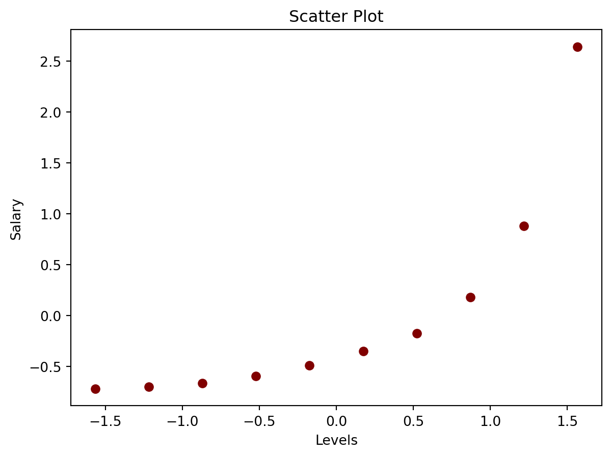
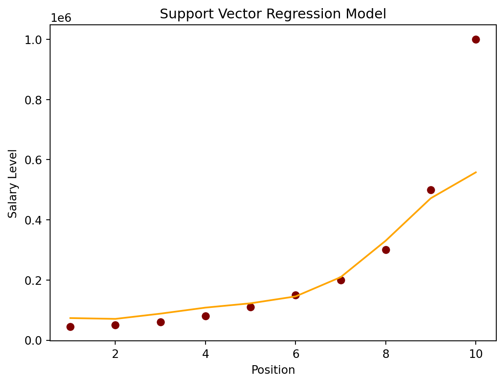

Regression is a vital concept in machine learning that helps us model relationships between variables. In this blog post, we’ll explore both linear and nonlinear regression, dive into the mathematical formulas, provide explanations, visualize the results, and work with a synthetic dataset.
What is Linear Regression?
Linear regression is a straightforward approach for modeling the relationship between a dependent variable \((Y)\) and one or more independent variables \((X)\).
1. Formula
The formula for simple linear regression is:
\[
Y = \beta_0 + \beta_1 X
\]
where:
\(Y\) is the dependent variable.
\(X\) is the independent variable.
\(\beta_0\) is the intercept.
\(\beta_1\) is the slope.
2. Python Implementation
To get started, let’s simulate some data and look at how the predicted values \((Y_e)\) differ from the actual value \((Y)\)
Code
import pandas as pdimport numpy as npfrom matplotlib import pyplot as plt# Generate 'random' datanp.random.seed(0)X =2.5* np.random.randn(100) +1.5# Array of 100 values with mean = 1.5, stddev = 2.5res =0.5* np.random.randn(100) # Generate 100 residual termsy =2+0.3* X + res # Actual values of Y# Create pandas dataframe to store our X and y valuesdf = pd.DataFrame( {'X': X,'y': y})# Show the first five rows of our dataframedf.head()
X
y
0
5.910131
4.714615
1
2.500393
2.076238
2
3.946845
2.548811
3
7.102233
4.615368
4
6.168895
3.264107
Now, we can have an estimate for alpha and beta, therefore our model can be written as \((Y_e) = 2.003 + 0.323X\), and then we can make predictions:
Code
# Calculate the mean of X and yxmean = np.mean(X)ymean = np.mean(y)# Calculate the terms needed for the numerator and denominator of betadf['xycov'] = (df['X'] - xmean) * (df['y'] - ymean)df['xvar'] = (df['X'] - xmean)**2# Calculate beta and alphabeta = df['xycov'].sum() / df['xvar'].sum()alpha = ymean - (beta * xmean)print(f'alpha = {alpha}')print(f'beta = {beta}')
We can create a plot (shown below) by comparing our predicted values ypredwith the actual values of y to gain a clearer visual insight into our model’s performance.
Code
ypred = alpha + beta * X# Plot regression against actual dataplt.figure(figsize=(12, 6))plt.plot(X, ypred) # regression lineplt.plot(X, y, 'ro') # scatter plot showing actual dataplt.title('Actual vs Predicted')plt.xlabel('X')plt.ylabel('y')plt.show()
3. Linear Regression on the Real (advertising) Dataset
# Import and display first five rows of advertising datasetadvert = pd.read_csv('advertising.csv')advert.head(5)
TV
Radio
Newspaper
Sales
0
230.1
37.8
69.2
22.1
1
44.5
39.3
45.1
10.4
2
17.2
45.9
69.3
12.0
3
151.5
41.3
58.5
16.5
4
180.8
10.8
58.4
17.9
Now we can visualise our regression model by plotting sales_pred against the TV advertising costs to find the best fit line:
Code
import statsmodels.formula.api as smf# Initialise and fit linear regression model using `statsmodels`model = smf.ols('Sales ~ TV', data=advert)model = model.fit()# Predict valuessales_pred = model.predict()# Plot regression against actual dataplt.figure(figsize=(12, 6))plt.plot(advert['TV'], advert['Sales'], 'o') # scatter plot showing actual dataplt.plot(advert['TV'], sales_pred, 'r', linewidth=2) # regression lineplt.xlabel('TV Advertising Costs')plt.ylabel('Sales')plt.title('TV vs Sales')plt.show()
With this model, we can make sales predictions for any given expenditure on TV advertising. For instance, in the scenario of raising TV advertising expenses to $500, our prediction indicates that sales would increase to ~35 units.
Code
new_X =500model.predict({"TV": new_X})
0 34.707207
dtype: float64
What is Non-Linear Regression?
Nonlinear regression is used when the relationship between variables is not linear and cannot be accurately represented by a straight line.
1. Formula
The formula for a simple nonlinear regression can vary depending on the chosen model. Let’s consider a simple polynomial regression:
\[
Y = \beta_0 + \beta_1 X + \beta_2 X^2
\]
where:
\(Y\) is the dependent variable.
\(X\) is the independent variable.
\(\beta_0\) is the intercept.
\(\beta_1\) is the coefficient for the linear term.
\(\beta_2\) is the coefficient for the quadratic term.
2. Non-Linear Regression on the Real (Position vs. Salaries) Dataset
# Import the librariesimport numpy as npimport matplotlib.pyplot as pltimport pandas as pd# get the datasetdataset = pd.read_csv('Position_Salaries.csv')# View the datasetdataset.head(5)
Position
Level
Salary
0
Business Analyst
1
45000
1
Junior Consultant
2
50000
2
Senior Consultant
3
60000
3
Manager
4
80000
4
Country Manager
5
110000
Unique Level & Salary of the features in the dataset:
Code
# split the data into featutes and target variable seperatelyX_l = dataset.iloc[:, 1:-1].values # features sety_p = dataset.iloc[:, -1].values # set of study variableprint('Unique Level: ', X_l)print('Unique Salary: ', y_p)y_p = y_p.reshape(-1,1)
Our data is prepared for the implementation of our SVR model.
Nevertheless, before proceeding, we will initially visualize the data to understand the characteristics of the SVR model that aligns best with it. Let’s generate a scatter plot for our two variables.
plt.scatter(X_l, y_p, color ='red') # plotting the training setplt.title('Scatter Plot') # adding a tittle to our plotplt.xlabel('Levels') # adds a label to the x-axisplt.ylabel('Salary') # adds a label to the y-axisplt.show()

To implement our model, the first step involves importing it from scikit-learn and creating an object for it.
Given that we have specified our data as non-linear, we will employ a kernel known as the Radial Basis Function (RBF) kernel.
Once the kernel function is declared, we proceed to fit our data onto the object. The subsequent program executes these steps:
Code
# import the modelfrom sklearn.svm import SVR# create the model objectregressor = SVR(kernel ='rbf')# fit the model on the dataregressor.fit(X_l, y_p)# Make a predictionA=regressor.predict(StdS_X.transform([[6.5]]))print(A)
[-0.27861589]
/Library/Frameworks/Python.framework/Versions/3.10/lib/python3.10/site-packages/sklearn/utils/validation.py:1183: DataConversionWarning: A column-vector y was passed when a 1d array was expected. Please change the shape of y to (n_samples, ), for example using ravel().
y = column_or_1d(y, warn=True)
Now that we have learned how to implement the SVR model and make predictions, the last step is to visualize our model.
Code
# inverse the transformation to go back to the initial scaleplt.scatter(StdS_X.inverse_transform(X_l), StdS_y.inverse_transform(y_p), color ='red')plt.plot(StdS_X.inverse_transform(X_l), StdS_y.inverse_transform(regressor.predict(X_l).reshape(-1,1)), color ='blue')# add the title to the plotplt.title('Support Vector Regression Model')# label x axisplt.xlabel('Position')# label y axisplt.ylabel('Salary Level')# print the plotplt.show()

Conclusion
In this blog post, we explored both linear and nonlinear regression in machine learning. We discussed the mathematical formulas, provided Python implementations, and visualized the results using synthetic data. Linear regression is suitable for modeling linear relationships, while nonlinear regression, as demonstrated through polynomial regression, can capture more complex patterns in the data.
Understanding these regression techniques is essential for modeling and predicting relationships in various fields, including economics, biology, and engineering.
---title: "Linear & Nonlinear Regression"author: "Huayu Liang"date: "now"categories: [ML, visualization, linear regressson]image: "linear.png"---Image from the source: [Analytics Yogi: Linear Regression Python Examples](https://vitalflux.com/linear-regression-explained-python-sklearn-examples/)# Exploring Regression with PythonRegression is a vital concept in machine learning that helps us model relationships between variables. In this blog post, we'll explore both linear and nonlinear regression, dive into the mathematical formulas, provide explanations, visualize the results, and work with a synthetic dataset.## What is Linear Regression?Linear regression is a straightforward approach for modeling the relationship between a dependent variable $(Y)$ and one or more independent variables $(X)$.### 1. FormulaThe formula for simple linear regression is:$$Y = \beta_0 + \beta_1 X$$where:- $Y$ is the dependent variable.- $X$ is the independent variable.- $\beta_0$ is the intercept.- $\beta_1$ is the slope.### 2. Python ImplementationTo get started, let's simulate some data and look at how the predicted values $(Y_e)$ differ from the actual value $(Y)$```{python}import pandas as pdimport numpy as npfrom matplotlib import pyplot as plt# Generate 'random' datanp.random.seed(0)X =2.5* np.random.randn(100) +1.5# Array of 100 values with mean = 1.5, stddev = 2.5res =0.5* np.random.randn(100) # Generate 100 residual termsy =2+0.3* X + res # Actual values of Y# Create pandas dataframe to store our X and y valuesdf = pd.DataFrame( {'X': X,'y': y})# Show the first five rows of our dataframedf.head()```Now, we can have an estimate for `alpha` and `beta`, therefore our model can be written as $(Y_e) = 2.003 + 0.323X$*,* and then we can make predictions:```{python}# Calculate the mean of X and yxmean = np.mean(X)ymean = np.mean(y)# Calculate the terms needed for the numerator and denominator of betadf['xycov'] = (df['X'] - xmean) * (df['y'] - ymean)df['xvar'] = (df['X'] - xmean)**2# Calculate beta and alphabeta = df['xycov'].sum() / df['xvar'].sum()alpha = ymean - (beta * xmean)print(f'alpha = {alpha}')print(f'beta = {beta}')```We can create a plot (shown below) by comparing our predicted values `ypred`with the actual values of `y` to gain a clearer visual insight into our model's performance.```{python}ypred = alpha + beta * X# Plot regression against actual dataplt.figure(figsize=(12, 6))plt.plot(X, ypred) # regression lineplt.plot(X, y, 'ro') # scatter plot showing actual dataplt.title('Actual vs Predicted')plt.xlabel('X')plt.ylabel('y')plt.show()```### 3. Linear Regression on the Real (advertising) DatasetBelow is the preview of the "[advertising.csv](https://www.kaggle.com/search?q=advertising+dataset)" dataset```{python}# Import and display first five rows of advertising datasetadvert = pd.read_csv('advertising.csv')advert.head(5)```Now we can visualise our regression model by plotting `sales_pred` against the TV advertising costs to find the best fit line:```{python}import statsmodels.formula.api as smf# Initialise and fit linear regression model using `statsmodels`model = smf.ols('Sales ~ TV', data=advert)model = model.fit()# Predict valuessales_pred = model.predict()# Plot regression against actual dataplt.figure(figsize=(12, 6))plt.plot(advert['TV'], advert['Sales'], 'o') # scatter plot showing actual dataplt.plot(advert['TV'], sales_pred, 'r', linewidth=2) # regression lineplt.xlabel('TV Advertising Costs')plt.ylabel('Sales')plt.title('TV vs Sales')plt.show()```\With this model, we can make sales predictions for any given expenditure on TV advertising. For instance, in the scenario of raising TV advertising expenses to \$500, our prediction indicates that sales would increase to \~35 units.```{python}new_X =500model.predict({"TV": new_X})```## What is Non-Linear Regression?Nonlinear regression is used when the relationship between variables is not linear and cannot be accurately represented by a straight line.### 1. FormulaThe formula for a simple nonlinear regression can vary depending on the chosen model. Let's consider a simple polynomial regression:$$Y = \beta_0 + \beta_1 X + \beta_2 X^2$$where:- $Y$ is the dependent variable.- $X$ is the independent variable.- $\beta_0$ is the intercept.- $\beta_1$ is the coefficient for the linear term.- $\beta_2$ is the coefficient for the quadratic term.### 2. Non-Linear Regression on the Real (Position vs. Salaries) DatasetBelow is the preview of the "[Position_Salaries.csv](https://github.com/BejaminNaibei/dataset/blob/main/Position_Salaries.csv)" dataset```{python}# Import the librariesimport numpy as npimport matplotlib.pyplot as pltimport pandas as pd# get the datasetdataset = pd.read_csv('Position_Salaries.csv')# View the datasetdataset.head(5)```Unique Level & Salary of the features in the dataset:```{python}# split the data into featutes and target variable seperatelyX_l = dataset.iloc[:, 1:-1].values # features sety_p = dataset.iloc[:, -1].values # set of study variableprint('Unique Level: ', X_l)print('Unique Salary: ', y_p)y_p = y_p.reshape(-1,1)```Our data is prepared for the implementation of our SVR model.Nevertheless, before proceeding, we will initially visualize the data to understand the characteristics of the SVR model that aligns best with it. Let's generate a scatter plot for our two variables.```{python}from sklearn.preprocessing import StandardScalerStdS_X = StandardScaler()StdS_y = StandardScaler()X_l = StdS_X.fit_transform(X_l)y_p = StdS_y.fit_transform(y_p)``````{python}plt.scatter(X_l, y_p, color ='red') # plotting the training setplt.title('Scatter Plot') # adding a tittle to our plotplt.xlabel('Levels') # adds a label to the x-axisplt.ylabel('Salary') # adds a label to the y-axisplt.show()```To implement our model, the first step involves importing it from scikit-learn and creating an object for it.Given that we have specified our data as non-linear, we will employ a kernel known as the Radial Basis Function (RBF) kernel.Once the kernel function is declared, we proceed to fit our data onto the object. The subsequent program executes these steps:```{python}# import the modelfrom sklearn.svm import SVR# create the model objectregressor = SVR(kernel ='rbf')# fit the model on the dataregressor.fit(X_l, y_p)# Make a predictionA=regressor.predict(StdS_X.transform([[6.5]]))print(A)```Now that we have learned how to implement the SVR model and make predictions, the last step is to visualize our model.```{python}# inverse the transformation to go back to the initial scaleplt.scatter(StdS_X.inverse_transform(X_l), StdS_y.inverse_transform(y_p), color ='red')plt.plot(StdS_X.inverse_transform(X_l), StdS_y.inverse_transform(regressor.predict(X_l).reshape(-1,1)), color ='blue')# add the title to the plotplt.title('Support Vector Regression Model')# label x axisplt.xlabel('Position')# label y axisplt.ylabel('Salary Level')# print the plotplt.show()```## ConclusionIn this blog post, we explored both linear and nonlinear regression in machine learning. We discussed the mathematical formulas, provided Python implementations, and visualized the results using synthetic data. Linear regression is suitable for modeling linear relationships, while nonlinear regression, as demonstrated through polynomial regression, can capture more complex patterns in the data.Understanding these regression techniques is essential for modeling and predicting relationships in various fields, including economics, biology, and engineering.